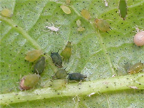

| Home |
| COTTON |
| 1. Leafhopper |
| 2. Cotton Aphid |
| 3. Thrips |
| 4. Whitefly |
| 5. Mealy Bug |
| 6. Red Cotton Bug |
| 7. Dusky Cotton Bug |
| 8. Tobacco Cutworm |
| 9. Leaf Roller |
| 10. Semiloopers |
| 11. Stem Weevil |
| 12. Shoot Weevil |
| 13. Surface Weevil |
| 14. Black Scale |
| 15. White Scale |
| 16. Yellow Stem Scale |
| Questions |
| Download Notes |
PESTS OF COTTON :: Major Pests :: Copper Aphid
2. Cotton aphid: Aphis gossypii (Aphididae: Hemiptera)
Distribution and status: India, occasionally serious.
Host plants: Cotton, bhendi, brinjal, chillies, guava
Damage symptoms: It is a potential pest on cotton infesting tender shoots and under surface of the leaves. They occur in large numbers, suck the sap and cause stunted growth, gradual drying resulting in death of the plants. Development of black sooty mould due to the excretion of honey dew gives the plant, a dark appearance.
ETL: 5% of infested plants.
Bionomics: The aphids are greenish brown, soft bodied and small insects. The alate as well as apterous females multiply parthenogenitically and viviparously. A single female may produce 8-22 nymphs in a day which become adults in about 7-9 days. They are often attended by ants for the sweet honey dew secretion. Winged forms may be seen under crowded conditions.
 |
Management
- Monitor the nymphs and adults of early season sucking pests from the 14th day after sowing.
- Conserve natural enemies viz., Monochilus sexmaculatus, Coccinella septumpunctata, Aphelinus mali, A. flavipes, Phylloscopus tristis
- Spray any of the following insecticides with 500 L water/ha.
|
|
|
|
|
|
|
|
|
|
|
|
|
|